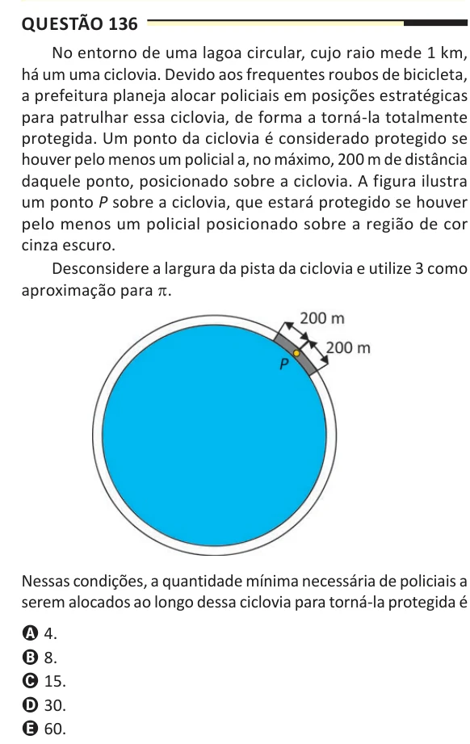

ENEM 2025 · 2º dia · Caderno 5 amarelo
Matemática,
uma questão de cada vez.
Leia o enunciado original, escolha uma alternativa e abra o gabarito para conferir seu resultado. Seu progresso fica salvo neste navegador.
Questões45136 a 180
Conferidas0de 44 válidas
Acertos00% de aproveitamento
Anuladas1questão 178
QUESTÃO 1 DE 45Página 16 do caderno
MATEMÁTICA E SUAS TECNOLOGIAS
Não respondidaQuestão 136
Leia a questão e marque a letra da alternativa que você escolheria.

SUA RESPOSTA
Selecione uma letra